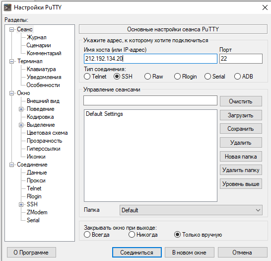
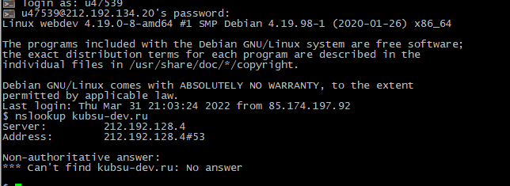
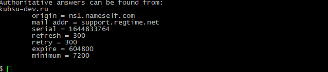
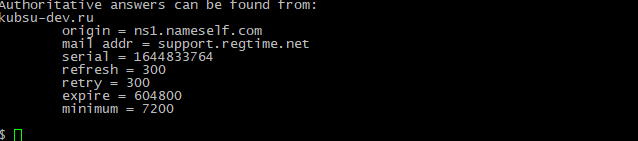
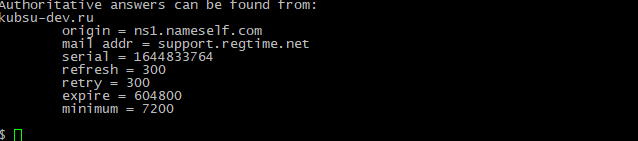
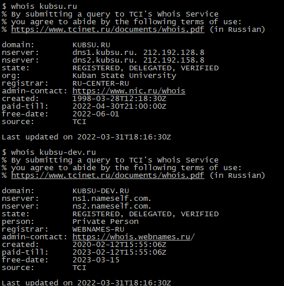
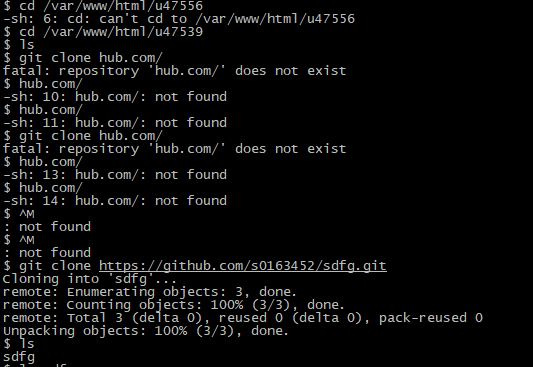
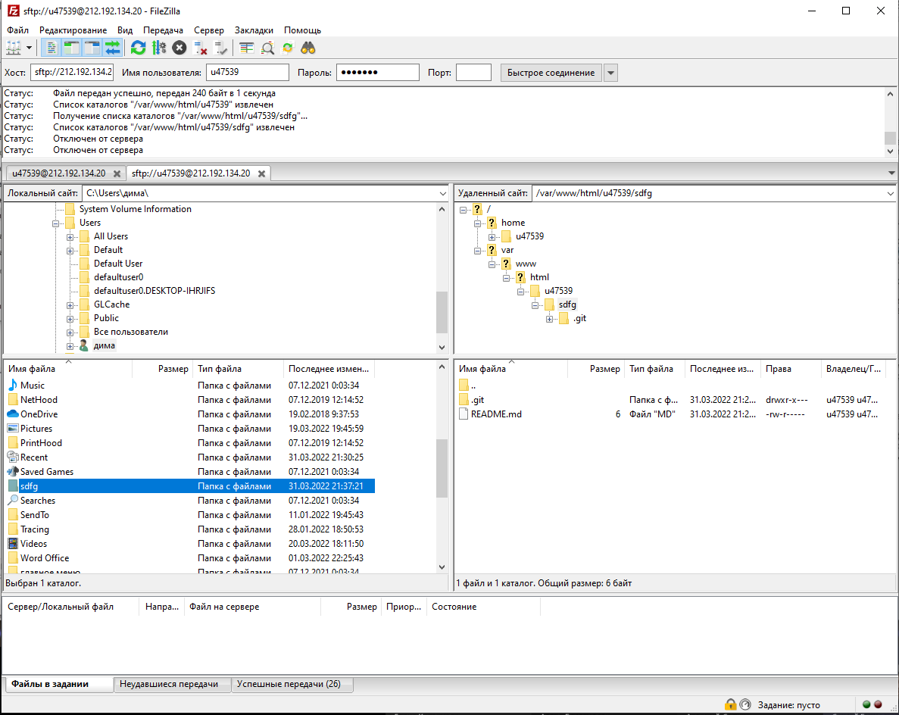

Клиент Putty, необходимый для установки соединения с сервером по протоколу SSH

Вызов команды ping. Отправляет пакеты по протоколу ICMP на выбранный сервер для проверки качества соединения
с ним. IP сервера kubsu. ru 212.192.128.92
nslookup - запрос информации о домене от DNS. A-записи доменов kubsu.ru и kubsu-dev.ru - IP по которому
находятся сервера

MX-записи доменов kubsu.ru и kubsu-dev.ru - почтовые сервер домена и приоритет
 


Вызов команды whois. Вывод информации о домене и его владельце: н-записи (домен и айпи), статус, регистратор, контакты владельца, даты создания и регистрации, время доступа

Клонирование репозитория из GitHub на сервер командой git clone

FTP (протокол передачи данных по сети) соединение через программу FileZilla. Копирование файлов находящихся на сервере на локальный компьютер
